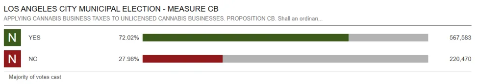

LA Just Voted to Tax the City's Illegal Weed Shops — Here's What Measure CB Actually Does
Angelenos passed it by a landslide. The catch? The licensed dispensaries you already shop at have been paying these taxes the whole time.

If you've ever wondered why the corner "dispensary" with the neon cross and no menu online could undercut a real, licensed shop on price — congratulations, Los Angeles voters just wondered the same thing out loud, at the ballot box. On June 2026's primary ballot, the city approved Measure CB (Proposition CB), a measure that finally drags unlicensed, illegal weed shops into the same tax bracket that licensed retailers have been living in for years.
And it wasn't close. The measure sailed through with around 72% voting yes — roughly 567,000 ballots in favor against about 220,000 opposed, per the latest count posted by the city's official results. In a primary where voters actually rejected a separate hotel-tax hike, the weed-shop measure was the easy yes.
So what does Measure CB actually do?
Here's the plot twist most headlines bury: Measure CB does not create a new tax. It takes the cannabis business taxes Los Angeles already charges licensed operators and applies them to the unlicensed shops that have been dodging them entirely.
Translation: the illegal storefronts that have been selling untested product tax-free now owe the same rates as everyone else.
City analysts estimate Measure CB could pull in somewhere between $30 million and $35 million a year if the rates are actually collected — money earmarked for the general fund as LA stares down a tight budget and a packed events calendar. The change is expected to take effect in summer 2026, once the election is certified.
Licensed vs. unlicensed: the gap that mattered
This is the part that hits home for anyone who actually buys legal weed in LA. A licensed dispensary plays an expensive game: state and city licensing, mandatory lab testing on every batch, seed-to-sale tracking, security requirements, and yes — that stack of cannabis business taxes on top of state excise and sales tax. All of it shows up on your receipt.
An unlicensed shop skipped most of that. No testing, no tracking, and until now, no city cannabis tax. That's how a back-alley operation could flash lower prices: it was quietly externalizing every cost a legitimate business absorbs. Measure CB doesn't shut those shops down on its own — but it removes the tax advantage that helped them undercut the legal market.
How a licensed shop like LAXCC has been playing it
To see what "playing by the rules" looks like in practice, consider a licensed operator like LAX Cannabis Club (LAXCC), a dispensary near LAX Airport that's been collecting and remitting these exact taxes since it opened its doors. For shops like it, Measure CB isn't a new bill — it's the rest of the field finally getting the same invoice.
"We've paid every dollar of cannabis tax since day one — that's just the cost of running a licensed, lab-tested shop. Measure CB means the operators cutting corners finally play by the same rules we do. We're all for it."
— A spokesperson for LAX Cannabis Club (LAXCC)It's a telling reaction. The businesses you'd expect to grumble about a tax measure are the ones cheering it on — because for licensed retailers, the issue was never the tax. It was watching illegal competitors skip it.
The catch: will the city actually enforce it?
Here's where the optimism gets a reality check. As reporters noted, it's not obvious how the city will track down hundreds of unlicensed shops and force them to pay. An illegal storefront that already ignores licensing and testing law isn't likely to voluntarily file a tax return.
That's the open question hanging over Measure CB's projected millions: collection. Even critics who worried the measure could "normalize" illegal operators agree the enforcement mechanics are the whole ballgame. Pass the tax, sure — but the revenue only materializes if the city can make non-compliant shops pay up.
What it means for you, the shopper
For everyday buyers, the takeaway is simpler than the policy. The easiest way to know your money isn't funding an untested, off-the-books operation is to buy from a licensed dispensary — the kind that's been paying these taxes (and testing its product) all along.
If you're flying in or out of LA, that can be as simple as stopping at a licensed shop near the airport. Measure CB just made the playing field a little more honest — and rewarded the businesses that were already on it.
Shopping legal near LAX?
LAX Cannabis Club (LAXCC) is a licensed, lab-tested dispensary minutes from LAX Airport — same taxes, same rules, real receipts. Browse the menu and order ahead for pickup.
Visit LAXCC.comSources
Disclosure: This is sponsored content produced in partnership with LAX Cannabis Club (LAXCC). Film Daily may receive compensation for this article and for links to the sponsor. Vote totals and tax figures reflect reporting available at publication and unofficial results that may change as the count is certified; confirm details with the Los Angeles City Clerk and the sources above. Cannabis is for adults 21+ (or 18+ with a valid medical recommendation). Please consume responsibly.